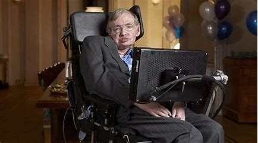

Está en: Página Principal > Letra E > Ela
Índice artículo
ELA
La ELA es una enfermedad neurodegenerativa progresiva que afecta las células nerviosas en el cerebro y la médula espinal. También conocida como enfermedad de Lou Gehrig, se caracteriza por la degeneración de las neuronas motoras, lo que lleva a la debilidad muscular, pérdida de coordinación y parálisis. A pesar de los avances en la investigación, no existe una cura definitiva para la ELA.
Stephen Hawking: My expectations were reduced to zero when I was 21. Everything since then has been a bonus.
Causas de la ELA
- Causas genéticas: Aproximadamente el 10% de los casos son hereditarios y se deben a mutaciones genéticas.
- Causas ambientales: Factores como la exposición a toxinas, el estrés físico o químico pueden contribuir a la enfermedad.
- Causas desconocidas: En muchos casos, la causa exacta de la ELA sigue sin conocerse.
Síntomas de la enfermedad
- Debilidad muscular progresiva
- Espasmos y calambres musculares
- Problemas de coordinación y equilibrio
- Atrofia muscular
- Dificultad para hablar y tragar
- Parálisis gradual de los músculos
Pruebas para detectarla
- Electromiografía (EMG)
- Examina la actividad eléctrica de los músculos para detectar anomalías que son indicativas de ELA.
- Resonancia magnética (RM)
- Se utiliza para descartar otras enfermedades que puedan causar síntomas similares y para evaluar la salud general del cerebro y la médula espinal.
- Análisis de sangre y pruebas genéticas
- Se realizan para descartar otras condiciones y, en casos familiares, para identificar mutaciones genéticas asociadas con la ELA.
- Pruebas de función pulmonar
- Evalúan la capacidad respiratoria y la función de los músculos respiratorios, que pueden verse afectados en etapas avanzadas de la enfermedad.
Tratamiento
No existe una cura para la ELA, pero el tratamiento se enfoca en manejar los síntomas y mejorar la calidad de vida. Esto incluye terapia física para mantener la movilidad, terapia ocupacional para adaptarse a los cambios, y apoyo nutricional para enfrentar dificultades al tragar. Los medicamentos como el riluzol pueden ayudar a ralentizar la progresión de la enfermedad. La atención multidisciplinaria y el apoyo emocional también son esenciales para el manejo integral de la enfermedad.
Expectativas
La ELA es una enfermedad progresiva que lleva a una disminución gradual de la función muscular. La velocidad de la progresión varía entre los pacientes, pero la mayoría de las personas experimenta una pérdida significativa de la función motora con el tiempo. El pronóstico promedio es de 2 a 5 años desde el diagnóstico hasta el deterioro severo, aunque algunos pacientes pueden vivir más tiempo con cuidados adecuados y tratamiento.